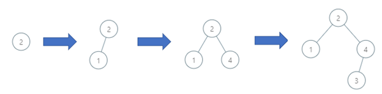
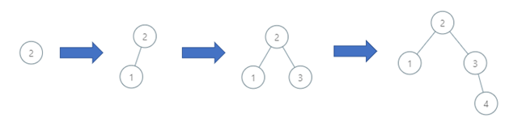
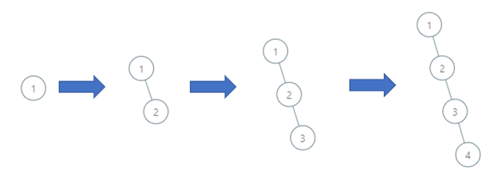

| Category | Difficulty | Likes | Dislikes |
|---|---|---|---|
| Algorithms | Medium | 109 | 12 |
array | tree | binary-search-tree | binary-tree | ordered-set
You are given a 0-indexed integer array order of length n, a permutation of integers from 1 to n representing the order of insertion into a binary search tree.
A binary search tree is defined as follows:
The binary search tree is constructed as follows:
order[0] will be the root of the binary search tree.Return the depth of the binary search tree.
A binary tree's depth is the number of nodes along the longest path from the root node down to the farthest leaf node.
Example 1:

Input: order = [2,1,4,3]
Output: 3
Explanation: The binary search tree has a depth of 3 with path 2->3->4.Example 2:

Input: order = [2,1,3,4]
Output: 3
Explanation: The binary search tree has a depth of 3 with path 2->3->4.Example 3:

Input: order = [1,2,3,4]
Output: 4
Explanation: The binary search tree has a depth of 4 with path 1->2->3->4.
Constraints:
n == order.length1 <= n <= 105order is a permutation of integers between 1 and n.